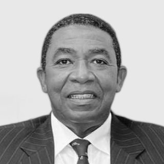
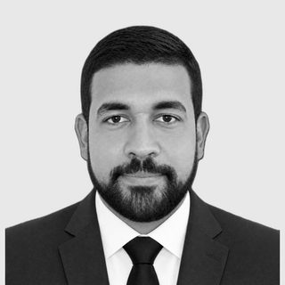

XXII Congreso Internacional de Investigación Científica
El principal encuentro científico del país celebra su vigésima segunda edición como actividad académica central de la Semana Dominicana de la Ciencia y la Tecnología 2027.
Una semana dedicada a la ciencia, con el XXII CIC como actividad central
La Semana Dominicana de la Ciencia y la Tecnología reúne actividades científicas, educativas y de divulgación organizadas por universidades, centros de investigación, instituciones públicas y entidades del sector productivo en todo el país. Como parte de esta celebración nacional, del 23 al 25 de junio se desarrollará el XXII Congreso Internacional de Investigación Científica en la UNPHU.
Libro de Resúmenes con ISBN
Los trabajos aceptados formarán parte del Programa Oficial y del Libro de Resúmenes del Congreso, publicación que recoge la producción científica presentada durante el evento.
Ciencia conectada con el desarrollo nacional
Un espacio para fortalecer la colaboración entre universidades, centros de investigación, sector productivo, instituciones públicas y organismos nacionales e internacionales.
Cursos, talleres y paneles especializados
Actividades orientadas al fortalecimiento de capacidades en investigación científica, análisis de datos, innovación, divulgación científica y tecnologías emergentes.
Llamado a presentación de trabajos
El Ministerio de Educación Superior, Ciencia y Tecnología (MESCyT) invita a investigadores, docentes, estudiantes, profesionales, gestores de innovación y representantes de instituciones públicas y privadas a presentar sus contribuciones académicas en el XXII Congreso Internacional de Investigación Científica (XXII CIC), que se celebrará del 23 al 25 de junio de 2027 en la Universidad Nacional Pedro Henríquez Ureña (UNPHU), en el marco de la Semana Dominicana de la Ciencia y la Tecnología 2027.
El congreso constituye un espacio para la difusión del conocimiento, el intercambio de experiencias y la generación de redes de colaboración científica orientadas al fortalecimiento de la ciencia, la tecnología, la innovación y el desarrollo sostenible de la República Dominicana.
Modalidades de participación
- Ponencia oral: presentación de resultados de investigación en sesiones concurrentes.
- Cartel científico: presentación visual de resultados de investigación, desarrollo tecnológico e innovación.
- Simposio: conjunto de presentaciones organizadas en torno a una temática común coordinada por un investigador responsable.
- Panel: discusión especializada entre expertos sobre temas de interés científico, tecnológico y social.
- Curso o taller: actividades formativas dirigidas al fortalecimiento de competencias y capacidades de investigación.
¿Qué se busca?
Trabajos de investigación científica, tecnológica y de innovación con resultados originales y relevantes, desarrollados en comunidades, hospitales, centros educativos, laboratorios, empresas, instituciones públicas, zonas agrícolas y otros territorios productivos.
Se valorarán especialmente las investigaciones que aporten evidencia, soluciones o propuestas para enfrentar desafíos sociales, económicos, ambientales, educativos, tecnológicos y de salud, contribuyendo al desarrollo sostenible de la República Dominicana y de la región.
Presentación de propuestas
Las propuestas deberán enviarse mediante formularios independientes, según la modalidad de participación:
- Formulario 1: Simposios.
- Formulario 2: Cursos, talleres y paneles.
- Formulario 3: Ponencias y carteles científicos.
Los resúmenes de las ponencias y carteles deberán presentarse en un único párrafo, conforme a las normas establecidas por la convocatoria.
En el caso de los simposios, los resúmenes de las presentaciones individuales serán solicitados posteriormente, una vez la propuesta de simposio haya sido evaluada y aprobada por el Comité Científico.
Organización del congreso
El XXII Congreso Internacional de Investigación Científica (XXII CIC) es organizado por el Ministerio de Educación Superior, Ciencia y Tecnología (MESCyT), a través del Viceministerio de Ciencia y Tecnología y la Dirección de Investigaciones Científicas y Tecnológicas, con el apoyo de instituciones nacionales e internacionales vinculadas al desarrollo de la ciencia, la tecnología y la innovación.

Dr. Genaro Rodríguez Martínez
Viceministro de Ciencia y Tecnología, MESCyT

Staling Cordero-Brito
Director de Investigaciones Científicas y Tecnológicas, MESCyT
UNPHU
Universidad Nacional Pedro Henríquez Ureña, sede del XXII Congreso Internacional de Investigación Científica.
Comité Organizador
El Comité Organizador estará integrado por representantes del MESCyT, la institución anfitriona y otras entidades colaboradoras responsables de la coordinación académica, logística y operativa del congreso.
Integrantes por confirmar.
Comité Científico
El Comité Científico estará conformado por investigadores y especialistas nacionales e internacionales responsables de la evaluación académica de las propuestas recibidas en las distintas áreas temáticas del congreso.
Integrantes por confirmar.
Áreas del conocimiento
Las propuestas deberán enmarcarse en una de las áreas del conocimiento utilizadas por los sistemas internacionales de clasificación de la investigación científica y tecnológica. Se promueve además la interdisciplinariedad y el abordaje de desafíos nacionales y regionales.
Ciencias Biológicas y Biomédicas
(Biotecnología, Bioingeniería, Biología Molecular, Biodiversidad, Medicina Molecular [incluida Biomedicina], Microbiología, Neurociencia, Nutrición, Farmacia y nuevos fármacos, Odontología, Enfermería, Veterinaria).
Ciencias Ambientales, Agroalimentarias y de la Tierra
(Medio Ambiente, Agua y de la Atmósfera, Ciencias Agroalimentarias y forestales, Ciencias de la Tierra y del Espacio, Botánica, Zoología)
Ciencias Físicas, Químicas y de los Materiales
(Ciencias Física [aplicaciones y fronteras], Ciencias Química [aplicaciones y fronteras], Energía Renovable, Econofísica).
Ciencias Computacionales e Ingeniería
(Ciencias de la Computación [desarrollo de Software, aplicaciones y fronteras], Microprocesadores y Microcontroladores, Mecatrónica y Robótica, Supercomputación, Tecnologías de la Información y Comunicación [TIC])
Procesos Industriales y Manufactura
(Campos Ingenieriles [campos afines y emergentes], Procesos Industriales y Manufactura).
Ciencias Sociales y Humanísticas
(Ciencias Humanísticas, Ciencias Sociales, Educación Científica)
Matemática, Fronteras Interdisciplinarias y Aplicaciones Emergentes
(Matemática [aplicaciones y fronteras], Ciencias Biológicas [campos emergentes, aplicaciones y fronteras],Tecnología emergentes [IA], Ciencias de la Computación [desarrollo de Software, aplicaciones y fronteras])
Fechas, envío e instrucciones
Los investigadores interesados en participar en el XXII Congreso Internacional de Investigación Científica deberán presentar sus propuestas conforme a las normas y procedimientos establecidos por el Comité Científico.
Fechas importantes
Preparación del resumen
Los resúmenes deberán presentarse en un único párrafo, con una extensión máxima de 250 palabras, e incluir de manera clara el objetivo de la investigación, la metodología empleada, los principales resultados y las conclusiones obtenidas.
Se aceptarán únicamente trabajos originales e inéditos, relacionados con una de las áreas temáticas del congreso. Los autores deberán incluir entre tres y cinco palabras clave. Las citas y referencias bibliográficas deberán elaborarse conforme a las normas de la American Psychological Association (APA), 7.ª edición.
Inscripción
La participación en el XXII Congreso Internacional de Investigación Científica requerirá inscripción previa. Los procedimientos de registro, categorías de participación y demás requisitos serán publicados oportunamente por el Comité Organizador.
Instrucciones para ponencias
Las ponencias aceptadas serán presentadas exclusivamente en modalidad presencial dentro de sesiones temáticas concurrentes. Cada presentación tendrá una duración total de 20 minutos, distribuidos en 17 minutos para la exposición y 3 minutos para preguntas y discusión.
Instrucciones para carteles científicos
Los carteles científicos deberán presentarse exclusivamente en modalidad presencial y tendrán unas dimensiones de 90 cm de ancho por 110 cm de alto. Los autores deberán estar presentes durante la sesión asignada para la presentación, discusión e intercambio con asistentes y evaluadores.
Envíe su propuesta
El XXII Congreso Internacional de Investigación Científica (XXII CIC) recibe propuestas de presentación de trabajos y de actividades académicas. Seleccione la modalidad correspondiente y complete el formulario de envío.
Simposios
Propuestas de simposios coordinados por especialistas en torno a una temática científica o tecnológica de interés.
Formulario de SimposiosCursos, Talleres y Paneles
Actividades académicas orientadas a la formación, actualización, intercambio de experiencias y discusión especializada.
Formulario de Cursos, Talleres y PanelesPonencias y Carteles Científicos
Presentación de trabajos de investigación en modalidad de ponencia oral o cartel científico.
Formulario de Ponencias y CartelesAgenda académica
Conferencias magistrales, simposios, paneles, cursos, talleres, pósteres e investigaciones concurrentes, del martes 22 al viernes 25 de junio de 2027.
Conferencias magistrales
Conferencistas por confirmar
Por completar Nombre, institución, país y título de cada conferencia.
Programa por días
| Día | Hora | Actividad |
|---|---|---|
| Dom 20 jun | — | Inicio de la Semana Dominicana de la Ciencia |
| Mar 22 jun | Por completar | Acto inaugural del XXII CIC · UNPHU |
| Mar 22 jun | Por completar | Conferencia magistral y sesiones concurrentes por eje |
| Mié 23 jun | Por completar | Simposios, paneles, sesiones concurrentes y talleres |
| Jue 24 jun | Por completar | Sesiones concurrentes, pósteres y cursos |
| Vie 25 jun | Por completar | Acto de clausura del XXII CIC |
| Dom 27 jun | — | Cierre de la Semana Dominicana de la Ciencia |
Cursos y Talleres
Universidad Nacional Pedro Henríquez Ureña
El XXII CIC se celebra en la UNPHU, en Santo Domingo, del 22 al 25 de junio de 2027.
Ubicación
Av. John F. Kennedy, Km. 7½, sector Los Jardines, Apartado Postal 1423 Santo Domingo, República Dominicana.
Datos de contacto principales
• Teléfono: (809) 562-6601
• Correo electrónico: info@unphu.edu.do
• Sitio web oficial: unphu.edu.do
Programa y Libro de Resúmenes
XXII CIC 2027
Recogerá el programa completo y los resúmenes de los trabajos aceptados. Se publicará con ISBN.
En preparación
XXI CIC 2026 · edición anterior
Staling Cordero Brito
PDF · enlace de descarga Por completar
Ediciones del Congreso
Desde 2005, el Congreso Internacional de Investigación Científica ha promovido el intercambio de conocimientos, la cooperación científica y la difusión de los avances en ciencia, tecnología e innovación, reuniendo a investigadores de la República Dominicana y de diversos países del mundo.
XXII CIC · UNPHU
Del 23 al 25 de junio de 2027. Celebrado en la Universidad Nacional Pedro Henríquez Ureña (UNPHU), como actividad central de la Semana Dominicana de Ciencia y Tecnología 2027.
XXI CIC · PUCMM
Más de 20 países participantes y más de 440 presentaciones científicas. Conferencia magistral de la Dra. Evelina Quiroga (UNSL-CONICET, Argentina).
XX CIC · Universidad O&M
Participación de investigadores en áreas como física, química, biología, educación científica, bioinformática, TIC, energía alternativa e inteligencia artificial.
XIX CIC · Semana Dominicana de Ciencia y Tecnología
Diplomacia científica, cambio climático, océanos, biodiversidad y gestión del sargazo como temas de relevancia internacional.
XVII CIC
Participación de representantes de 36 países, más de 320 trabajos científicos y seis conferencias magistrales.
Pasa a llamarse Congreso Internacional de Investigación Científica
Décima edición del evento, con 268 presentaciones científicas.
IX Congreso Interdisciplinario de Investigación Científica
Más de 170 presentaciones de investigadores procedentes de 25 países.
I Congreso Interdisciplinario de Investigación Científica
Primera edición del congreso, con 51 presentaciones científicas organizadas por la entonces SEESCyT.
Escríbanos
Dirección de Investigaciones Científicas y Tecnológicas (DICYT)
Viceministerio de Ciencia y Tecnología
Ministerio de Educación Superior, Ciencia y Tecnología (MESCyT)
📧 Correo: congresocic@mescyt.gob.do
☎ Teléfono: (809) 731-1100 Ext. XXXX
🕒 Horario de atención: Lunes a viernes, de 8:00 a.m. a 4:00 p.m.